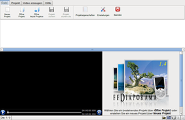
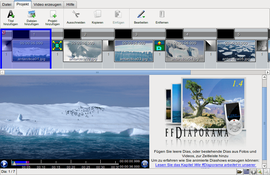
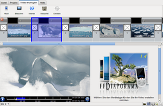

ffDiaporama
Dieser Artikel wurde für die folgenden Ubuntu-Versionen getestet:
Ubuntu 14.04 Trusty Tahr
Zum Verständnis dieses Artikels sind folgende Seiten hilfreich:
ffDiaporama  ist ein Programm für Linux und Windows, das zum Erzeugen von Filmen dient, die sich aus Bildern (Fotos), Videoclips und Musik zusammensetzen. Auch Untertitel sind möglich. ffDiaporama ist eines der wenigen Programme, das Bilder und Videoclips kombinieren kann.
ist ein Programm für Linux und Windows, das zum Erzeugen von Filmen dient, die sich aus Bildern (Fotos), Videoclips und Musik zusammensetzen. Auch Untertitel sind möglich. ffDiaporama ist eines der wenigen Programme, das Bilder und Videoclips kombinieren kann.
Es bietet unterschiedliche Aufbereitungsmöglichkeiten, z.B. Ausschnitt, Position, stufenloses Drehen (auch für Videos) oder Farb- und Schärfe-Anpassungen. Daneben sind eine Vielzahl von Effekten wie beispielsweise Ken Burns-Effekte oder Bild in Bild möglich. Weitere Funktionen:
Animationen auch auf Bildteile anwendbar
zahlreiche Übergangseffekte
Hinzufügen von Hintergrundmusik in den Formaten WAV, MP3 oder OGG
fertige Profile für die meisten aktuellen Abspielgeräte (DVD-Player, Smartphones, Spielekonsolen), aber auch für Internet-Plattformen wie YouTube oder Dailymotion

Ausgabeformate: AVI, MPG, MP4, Webm und MKV (Matroska)
Auflösungen von QVGA (320×240) bis Full HD (1920×1080)
Bildgeometrie vom klassischen 4:3 über Breitbild (16:9) bis hin zu Kinoformaten wie 2.35:1
Im Hintergrund wird unter Ubuntu Libav verwendet, während die Entwickler FFmpeg bevorzugen (was im Programmnamen deutlich wird). Alternative Programme sind im Artikel Diashows erstellen zu finden.
Installation¶
 Das Programm ist ab Ubuntu 12.10 in den offiziellen Paketquellen enthalten, allerdings in einer veralteten Version. Das folgende Paket muss installiert [1] werden:
Das Programm ist ab Ubuntu 12.10 in den offiziellen Paketquellen enthalten, allerdings in einer veralteten Version. Das folgende Paket muss installiert [1] werden:
ffdiaporama (universe)
 mit apturl
mit apturl
Paketliste zum Kopieren:
sudo apt-get install ffdiaporama
sudo aptitude install ffdiaporama
Ubuntu 16.04¶
Wer ffDiaporama unter Ubuntu 16.04 nutzen möchte, folgt der Anleitung Installation von ffDiaporama auf Ubuntu 16.04 .
PPA¶
Für die neuere Version 2.1 kann man bis einschließlich Ubuntu 14.04 das "Personal Package Archiv" (PPA) [2] der Entwickler nutzen.
Adresszeile zum Hinzufügen des PPAs:
ppa:ffdiaporamateam/stable
Hinweis!
Zusätzliche Fremdquellen können das System gefährden.
Ein PPA unterstützt nicht zwangsläufig alle Ubuntu-Versionen. Weitere Informationen sind der  PPA-Beschreibung des Eigentümers/Teams ffdiaporamateam zu entnehmen.
PPA-Beschreibung des Eigentümers/Teams ffdiaporamateam zu entnehmen.
Damit Pakete aus dem PPA genutzt werden können, müssen die Paketquellen neu eingelesen werden.
Nach dem Aktualisieren der Paketquellen erfolgt die Installation über das folgende Paket:
ffdiaporama (ppa)
mit apturl
Paketliste zum Kopieren:
sudo apt-get install ffdiaporama
sudo aptitude install ffdiaporama
Optional stehen zwei weitere Pakete zur Verfügung (siehe Erweiterungen):
ffdiaporama-texturemate (ppa)
ffdiaporama-openclipart (ppa)
mit apturl
Paketliste zum Kopieren:
sudo apt-get install ffdiaporama-texturemate ffdiaporama-openclipart
sudo aptitude install ffdiaporama-texturemate ffdiaporama-openclipart
Fremdpakete¶
Alternativ zum oben genannten PPA können über die offizielle Downloadseite  auch Fremdpakete heruntergeladen und manuell installiert [3] werden (nur bis einschließlich Ubuntu 14.04).
auch Fremdpakete heruntergeladen und manuell installiert [3] werden (nur bis einschließlich Ubuntu 14.04).
Hinweis!
Fremdpakete können das System gefährden.
Verwendung¶
Bei Ubuntu-Varianten mit einem Anwendungsmenü erfolgt der Start [4] über den Menü-Eintrag "Multimedia -> Movie creator ffDiaporama". Unter Unity gibt man stattdessen den Programmnamen ein.
Die Benutzung erfolgt grundsätzlich in drei Schritten (über "Hilfe -> Support und Hilfe" steht eine ausführliche deutsche Anleitung innerhalb des Programms zur Verfügung):
Bilder (und anderes Quellmaterial) importieren
Anzeigedauer und Übergangseffekte festlegen (Tipp: Kontextmenü
 verwenden)
verwenden)Video erzeugen
Ein Vorschaufenster zeigt das Ergebnis verkleinert an. Auf Wunsch kann man eine solche Zusammenstellung als "Projekt" speichern, um später noch Änderungen vornehmen zu können. Die Projektdateien bei ffDiaporama sind XML-Dateien mit der Dateierweiterung .ffd.
|  |
| Programmoberfläche |
|  |
| Nach dem Importieren von Bildern |
|  |
| Video erstellen |
Erweiterungen¶
Ab Version 1.6 (d.h. bei Installation über das PPA) können Extensions mit ffDiaporama genutzt werden. Derzeit gibt es zwei Erweiterungen:
Texturen zur Nutzung für Übergänge oder Texte
Zugriff auf OpenClipart.org
Einstellungen¶
 Über "Datei -> Einstellungen" gelangt man zur Konfiguration des Programms. Untergliedert ist diese in drei Reiter (Tabs):
Über "Datei -> Einstellungen" gelangt man zur Konfiguration des Programms. Untergliedert ist diese in drei Reiter (Tabs):
"Anwendungsoptionen" - Basiseinstellungen zum Programm, zur Vorschau und zum Editor
"Projektoptionen" - Standardwerte für neue Projekte
"Wiedergabeeinstellungen" - Standardwerte zur Videoerstellung und Gerätekategorien
Am unteren Fensterrand befinden sich zwei weitere Schaltflächen: "Überprüfe Konfiguration" und "Geräte verwalten". Über letztere gelangt man zur Definition der Einzelprofile der jeweiligen Gerätekategorie. Gespeichert werden die Einstellungen in den beiden XML-Dateien ~/.ffDiaporama/ffDiaporama.xml und ~/.ffDiaporama/Devices.xml im Homeverzeichnis.
Problembehebung¶
FFmpeg vs. Libav¶
Die Entwickler empfehlen das "echte" FFmpeg, vorzugsweise in der Version 1.x. Das Paket ffmpeg wurde aus den offiziellen Paketquellen entfernt. Stattdessen wird automatisch das Paket libav-tools genutzt (siehe auch Libav). Aus Kompatibilitätsgründen werden sowohl die alten als auch die neuen Befehle unterstützt, so dass keine Probleme auftreten sollten.
Links¶
Showmaster – Foto- und Video-Präsentationen mit Ffdiaporama erstellen
- LinuxUser, 11/2014Diashows erstellen
 Übersichtsartikel
ÜbersichtsartikelVideobearbeitung
wenn die Ansprüche steigen...


- Erstellt mit Inyoka
-
 2004 – 2017 ubuntuusers.de • Einige Rechte vorbehalten
2004 – 2017 ubuntuusers.de • Einige Rechte vorbehalten
Lizenz • Kontakt • Datenschutz • Impressum • Serverstatus -
Serverhousing gespendet von